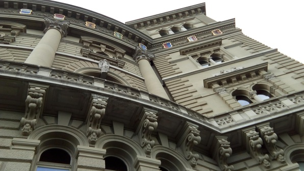

Pop Final!
Woke up blearily, quickly packed for today’s trip, showered, made myself some tasty oatmeal, and headed to class with Daniel.
The class started abruptly with an exam. Everyone thought it would be after at least the first break. No biggie! Squashed the darn thing and took a walk. Explored a random building:
Went to the language center after our break and played a goofy game, the “put a card to your forehead and try to find out what you are” game. I played with Do Yoon and two dudes from Taiwan and it was actually really fun.
At lunch break I had some venison, nom:
After lunch we got our exams back and our language certificates. I stayed in the classroom a bit longer to solve a Haskell problem and thank the teachers, then puttered back to Culmann. Left a bit later, armed with beer and cheese and bread, to meet Daniel and Cody at the HB. Missed the first train because it took me a little while to book the ticket. The train was a bit late in departing and I was booking on my phone, so actually I could have got the ticket a minute after departure and still boarded, but apparently that is not allowed :P The app warned me that I couldn’t book a ticket after the train had departed. So we wandered around for a bit, and Daniel got an expensive coffe and donut. No problem in the end, though; the tickets are flexible so we boarded the next train:

Bern!
And off thence to Bern, the “capital” of Switzerland! The government building there was really cool:

We even had a view of the Alps:
The rest of Bern was astonishingly pretty as well.
We saw the clock tower where Einstein apparently had a special relativistic epiphany:

Then walked down to the riverbank, which was really lovely and reminded me of home. We chatted about networks and admired the rushing water:
Back up the riverbank through some weird stairs:
And onto a platform overlooking the river:

Then we went to the cathedral whose spire dominated the landscape. This cool artwork was all that survived the Protestant de-idolatrization:
Walked back into town:

Ate tasty rosti.
Then we had a slice of apricot pie, which was really tart. The proprietor brought us some extra desserts for free. They were strange and looked like sweet doughy spaghetti, probably a cream extruded from something.
Finally, back to Zürich! Book a ticket nicely in advance, to avoid the debacle of our departure. Read Cryptonomicon on the way back. Up the hill to Culmann… snap! I realize I bought a ticket when I could have used my hot-off-the-presses free-after-7 card, and start kicking myself in the head. Fortunately this phase doesn’t last too long, and drowns in exhaustion. I register my SwissPass card which just arrived, write this log, make Deo (actually spelled Teo, as in Teodora) a camomile because she looks pretty beat too. We chat for a bit and then I hit the hay.